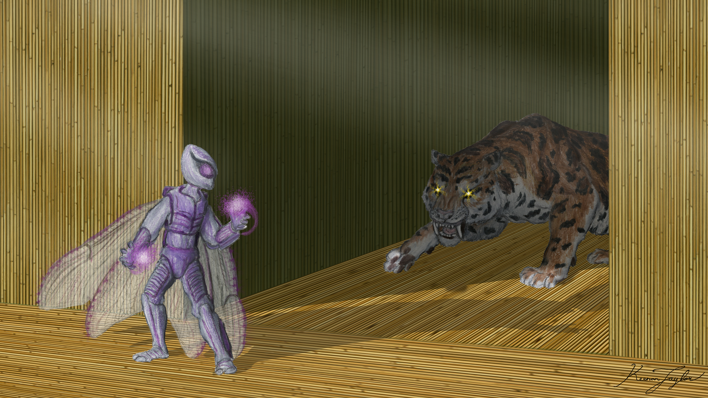
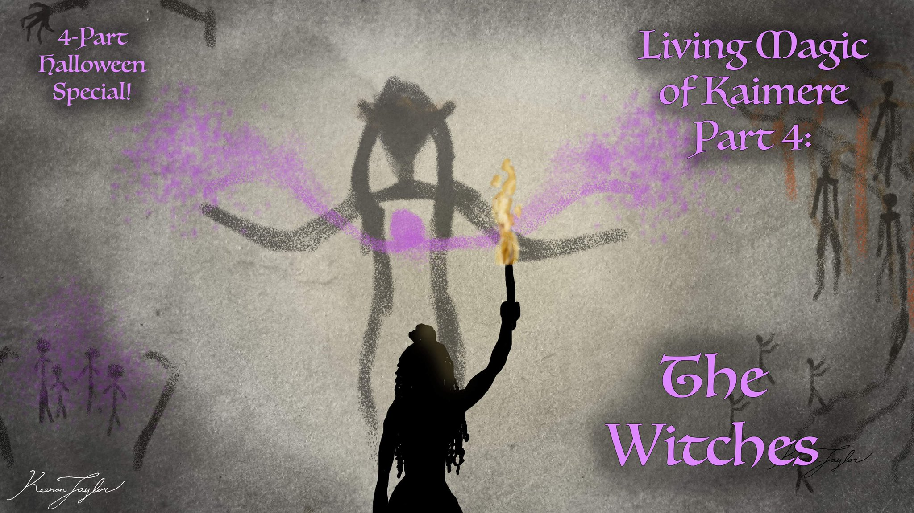

01 · INTRODUCTION
Overview

Among the many regions beyond the Known World, few have inspired as much fear, speculation, and enduring fascination as the Üshalek. Its name means the 'Hungry Roots Make the Bones Crawl', but its meaning in the Amanetran is more commonly simplified to 'the Forest of Bones.' Situated east of the Silverback Mountains, the forest occupies the eastern windward slopes and adjoining lowlands of a vast tropical region whose abundant rainfall sustains one of the most luxuriant expanses of vegetation on Kaimere. Yet, unlike the surrounding wilderness, the Üshalek is almost entirely devoid of ordinary animal life. Its apparent exclusion of fauna, the peculiar structures found along its perimeter, and the extraordinary organisms inhabiting its interior have made it one of the most unusual biological environments known to Kaimeran scholars.
For thousands of years, the Shu and the other peoples of the surrounding grasslands have regarded the forest as a place of supernatural hostility. Their traditions describe a woodland that consumes intruders, animates their remains, and turns the bodies of animals and people into extensions of its own vegetation. The name Üshalek reflects the most immediately recognizable feature of its boundary: trees and roots bearing the exposed skeletal remains of creatures that have entered and failed to return. These remains are not merely scattered throughout the undergrowth. They are frequently incorporated into the forest's exterior, protruding from trunks, entangled in roots, or displayed in positions that make them conspicuous to anyone approaching the woodland.
The forest's reputation predates the written histories of the surrounding peoples. Rock art found in the Houze Prairie depicts Üshalek trees alongside other dangers associated with the northern wilderness, including skin-changers, witches, and great predatory animals such as the uktan. Some of these depictions are older than the earliest known Shu records, suggesting that the forest was already a prominent feature of regional belief long before the emergence of the cultures that now inhabit its surroundings. Its existence is therefore not a recent discovery or an invention of folklore, although the supernatural explanations attached to it have undoubtedly shaped the surviving accounts.
The Üshalek is not simply a forest containing dangerous plants or unusually aggressive animals. It appears to represent an enormous, organized concentration of indigenous Kaimeran microorganisms collectively known as magic. These organisms, which are distinct from the multicellular life introduced from Earth by the Portal, possess the capacity to manipulate living tissue, influence biological processes, and construct complex relationships with their surroundings. In most known environments, magic occurs in relatively dispersed colonies or localized concentrations. The Üshalek, by contrast, appears to function as a unified ecological system in which the constituent organisms collectively maintain a territory, regulate its biological inhabitants, and respond to threats.
The scale and apparent coordination of this system place the Üshalek among the most powerful known hives of indigenous magic on Kaimere. Only the Portal itself is considered more consequential in its influence upon the planet. Whereas the Portal has reshaped Kaimere through the introduction and replication of Earth-derived organisms, the Üshalek exerts its influence through the direct manipulation of living organisms and the construction of an ecosystem under its own control. It is consequently one of the clearest examples of the extent to which native microbial life can influence the development and organization of the planet's larger ecosystems.
Despite its notoriety, the Üshalek remains poorly understood. Its interior has never been comprehensively surveyed, and most accounts of its biology originate from the observations of individuals who approached its margins or survived brief incursions. The few descriptions of its deeper regions are fragmentary, while the circumstances surrounding many reported expeditions remain inaccessible to the general public. Its origins, age, internal organization, and precise relationship with the wider ecology of Kaimere are consequently unresolved.
02 · Predatory Magic Hive
Taxonomic and Biological Considerations

The Üshalek cannot be classified as a conventional forest organism. It is not a single plant species, nor does it appear to be a naturally assembled community of independent trees, fungi, and animals. Rather, it is understood as an immense aggregation of indigenous microorganisms whose collective activities produce a coherent biological environment. These microorganisms are generally referred to as magic by Kaimerans, a term that encompasses a diverse range of organisms and biological phenomena that have not been adequately distinguished in conventional taxonomy.
The term hive is frequently applied to large concentrations of these organisms. A hive is not necessarily a single organism in the conventional sense, nor is it necessarily composed of genetically identical individuals. It describes a collective system in which numerous microscopic organisms coordinate their activities sufficiently to produce effects that appear purposeful at the macroscopic scale. The Great Portal is the most prominent example of this organization, but it is not unique. Other hives have been encountered throughout Kaimere, although none documented by scholars of the Great Library approaches the Üshalek in territorial influence and apparent biological power.
The internal organization of the Üshalek is unknown. It is uncertain whether its constituent microorganisms operate through a centralized structure, a distributed network, or a combination of both. Its apparent ability to respond to intruders at different locations suggests some form of communication or shared coordination across the forest. The speed with which infections progress within its territory also indicates that its influence is not restricted to isolated plants or individual colonies. Instead, the forest seems to possess the capacity to mobilize its constituent organisms throughout the surrounding environment.

The distinction between the forest and its inhabitants is therefore difficult to establish. Its trees, roots, and floral beasts may be understood as individual organisms, colonies, or specialized extensions of the larger hive. The extent to which they possess independent biological functions is not known. What is clear is that the Üshalek does not behave like an ordinary woodland. Its vegetation and animal-like inhabitants appear to participate in a common ecological system, with the latter performing many of the functions ordinarily fulfilled by large herbivores and predators.
The forest's most distinctive biological process is its ability to transform animal tissue into floral tissue. This process appears to begin when an animal enters the forest and becomes infected by fungal spores or by the magic itself. The infection gradually interferes with the animal's motor functions and eventually causes its death. Over time, the organism's tissues are replaced by floral cells that reproduce the general morphology of the original animal. In many cases, the resulting structure retains the animal's skeleton while developing a new musculature composed of plant-like tissue.
These organisms are commonly described as floral beasts. Their anatomy is neither wholly animal nor wholly botanical. They possess the recognizable body plans of the creatures from which they originated, but their living tissues have been replaced by structures that belong to the forest's own biological system. The extent to which they retain the internal organization, sensory capabilities, or behavior of their original hosts is uncertain. Nevertheless, they are capable of locomotion and apparently perform complex ecological functions.
The Üshalek's floral beasts are not simply animated remains. They are active components of the forest's maintenance and defense. They turn soil, disperse seeds, move fallen vegetation, create space for new growth, and attack organisms that threaten the woodland. Their existence suggests that the hive has developed a means of reproducing the ecological functions of animals without tolerating independent animal populations.
03 · Territory Range
Geographic Distribution and Environment
The Üshalek lies east of the Silverback Mountains, occupying the windward side of the range and extending into the surrounding lowlands. The region receives abundant rainfall, much of which is associated with moisture-laden winds rising over the mountains. Although the most prolific rainfall and the rivers it produces flow down the eastern side of the range, the western mountain communities have long regarded the forest as an extension of the same dangerous northern wilderness.
The forest's geographical position is particularly significant because it occupies an environment that would ordinarily support a highly productive tropical ecosystem. The combination of warm temperatures, abundant moisture, and substantial vegetation would normally sustain large populations of herbivorous and carnivorous animals. Instead, the Üshalek appears to reject most conventional animal life. Its interior contains no recognized megafaunal populations, and the animals that enter it are generally unable to survive independently of the forest's influence.
The surrounding peoples have consequently developed an unusually strong aversion to descending into the lowland rainforest. The Shu and neighboring inhabitants of the Houze Prairie traditionally avoid drinking from its rivers or consuming its fruits. Their refusal is not simply a matter of avoiding dangerous predators or poisonous plants. It reflects the belief that the forest itself is hostile to animal life and that even apparently harmless contact with its environment can expose an individual to infection.
This aversion is deeply embedded in regional traditions. The forest is not regarded as a resource frontier or a wilderness that can be gradually settled through exploration. It is understood as a territory belonging to something that actively resists intrusion. The surrounding communities have therefore maintained a cultural boundary between themselves and the woodland, even when doing so requires them to endure shortages of food or water.
The exterior of the Üshalek is perhaps its most distinctive geographical feature. Along portions of its perimeter, trees and roots bear the bones of animals, demons, and people that have entered the forest. These remains are frequently exposed rather than concealed, making the boundary appear almost deliberately ornamented with the remains of previous intruders. Skulls are particularly conspicuous and are sometimes displayed in positions that make them visible from outside the woodland.
The presence of these remains has generated considerable debate. Trees and other vegetation are known to consume bones, incorporating their mineral components into the surrounding biological environment. The Üshalek, however, appears to retain and expose them rather than allowing them to become fully incorporated into its substrate. This is difficult to explain as an incidental consequence of decomposition. The arrangement of skeletal remains, especially human skulls, suggests that their visibility may serve some function.
The leading interpretation is that the forest uses the remains as a deterrent. A boundary decorated with the skeletons of previous intruders would provide an unmistakable warning to any intelligent creature capable of recognizing the significance of the display. Such an interpretation implies that the forest does not merely destroy organisms that enter its territory but may also influence the behavior of those that remain outside it. Whether this is a deliberate communicative strategy or simply an emergent consequence of the hive's biological activity remains unknown.
04 · The Origins of the Predatory Forest
Evolutionary Origins and Competing Hypotheses
The origins of the Üshalek are among the most disputed subjects in the study of indigenous Kaimeran life. Although the forest has existed for longer than the surviving written histories of the surrounding peoples, its age cannot be established from the available evidence. Its relationship with the Portal, the First Children, and other forms of indigenous magic remains uncertain.

One hypothesis proposes that the Üshalek is a remnant of the First Children's domestication of magic. According to this interpretation, the forest may have originated as an artificial or deliberately cultivated hive, perhaps created to serve a particular purpose before becoming independent of its creators. The First Children are believed to have possessed an exceptional understanding of indigenous magic and may have developed methods of manipulating its constituent organisms for purposes that are no longer understood. If the Üshalek was once domesticated, its present hostility could represent a loss of control, a deliberate defensive adaptation, or a transformation of its original function.
The exposed skeletal remains along the forest's perimeter are frequently cited in support of this hypothesis. Their conspicuous arrangement appears consistent with a system designed to communicate danger to intelligent intruders. Such behavior would be particularly suggestive of an organism that had either been influenced by the First Children or developed in response to their activities.
A competing hypothesis maintains that the Üshalek is far older than the civilizations of the First Children and may be as ancient as the Portal itself. Under this interpretation, the forest represents an independent concentration of indigenous magic that developed naturally over an immense period. Its floral beasts, territorial behavior, and unusual biological organization would therefore be the products of a long evolutionary history rather than deliberate construction.
Some proponents of this interpretation suggest that the forest's unusual ecology may have developed in response to earlier attempts by the First Children to harvest, investigate, or control it. The exposed remains could consequently represent a defensive adaptation against intelligent organisms that previously threatened the hive. If correct, the Üshalek's hostility toward people would not necessarily be an original characteristic but rather a response to a long history of intrusion.
A third interpretation regards the forest as an elder god of the jungle. This explanation is more theological than biological, but it remains influential among those who regard the Üshalek's apparent coordination and power as evidence of a singular intelligence. The term elder god is used in several Kaimerean traditions to describe immensely powerful entities associated with particular territories or natural phenomena. Whether such beings are distinct organisms, exceptionally large hives of indigenous magic, or something not yet understood remains unresolved.
The possibility that the Üshalek is an elder god cannot be established or dismissed through the evidence currently available. Its territorial control, ability to transform other organisms, and apparent hostility toward intruders are consistent with the behavior attributed to such entities. However, these characteristics may also be explained through the collective activity of a sufficiently complex microbial hive.
The Üshalek's relationship with the Portal is similarly uncertain. Both are immense concentrations of indigenous magic, and both exert extraordinary influence over the biological environments in which they operate. Yet their functions differ considerably. The Portal is responsible for harvesting and replicating organisms from Earth, while the Üshalek appears to transform and reorganize organisms already present within its territory. There is no established evidence that the forest participates in the Portal's harvesting process or that the two hives share a common organizational structure.
The Great Portal remains the only known indigenous hive whose planetary influence clearly exceeds that of the Üshalek. This comparison, however, should not be taken to imply that the forest is merely a subordinate or derivative system. It may represent an entirely separate evolutionary trajectory within the broader diversity of native Kaimerean magic.
05 · Evolutionary History
The Floral Beasts and the Replacement of Animal Life

The most remarkable feature of the Üshalek is its apparent replacement of ordinary animal populations with organisms constructed from the remains of intruders. Whereas most forests depend upon animals to maintain their ecological structure, the Üshalek seems to have developed its own equivalents.
In conventional ecosystems, large herbivores perform a variety of functions that are essential to the maintenance of vegetation. Their feeding activities remove plant matter and create openings in the canopy, while their movement disturbs the soil and redistributes seeds. Their dung returns nutrients to the ground, and their movements connect otherwise isolated patches of vegetation. The absence of such animals would normally have substantial consequences for forest structure and regeneration.
The Üshalek appears to have recognized, in a biological rather than necessarily conscious sense, the importance of these functions. It does not tolerate large herbivores as independent inhabitants, yet its vegetation still requires the ecological processes that they ordinarily provide. The floral beasts appear to fulfill this requirement.
The process by which these creatures are produced begins when an animal enters the forest. Fungal spores or the indigenous magic itself take control of the animal's motor functions, eventually preventing it from behaving independently. The animal continues to exist temporarily as a biological host, but its body is gradually overwhelmed by the infection. As the organism starves and dies, its tissues are replaced by floral cells. These cells reproduce the general morphology of the original animal, sometimes developing an extensive floral musculature around the surviving skeletal framework.
The resulting creature may therefore retain the proportions and external form of a familiar animal while possessing an entirely different biological composition. The degree of anatomical preservation varies, although the skeletal frame appears to provide a common structural foundation. Its new tissues allow it to move and perform tasks within the forest, although the precise physiology of these organisms remains unknown.
The floral beasts serve primarily as gardeners and guardians. Their activities include churning the soil, dispersing seeds, moving fallen trees and vegetation, and creating openings that allow new growth to develop. They appear to participate in the management of the forest's vegetation, maintaining the conditions required for its continued expansion and regeneration.

Their role as guardians is equally important. The forest does not simply replace its herbivores with harmless botanical imitations. Its floral beasts also defend the woodland against intruders, including organisms of considerable size. They are capable of confronting large animals that would otherwise be among the dominant herbivores and predators of the surrounding region.

The accounts of encounters with titans, great sloths, and qotaur drakes indicate that the forest's defensive organisms can attain considerable size and strength. These animals are not necessarily defeated through conventional predation. Instead, the floral beasts appear to overwhelm them, after which their remains become part of the forest's biological substrate. Their meat is incorporated into the soil, while their bones may provide structural material for additional defenses.
This process creates a self-reinforcing system. Large intruders that might otherwise damage the vegetation are destroyed and converted into resources that support the forest. Their skeletons may then be incorporated into further defensive structures, while their bodies contribute nutrients to the surrounding ecosystem. The forest thus appears capable of turning the ecological pressures imposed by large animals into additional means of maintaining its own territory.
The floral beasts also raise important questions about the relationship between the hive and the organisms it creates. It is not known whether each creature possesses an independent nervous system or whether its movements are controlled directly by the magic inhabiting its tissues. The extent to which the original animal's behavior survives the transformation is also uncertain. The available evidence suggests that the resulting organisms are under the forest's control, but the precise mechanisms by which this control is exercised remain unknown.
It is therefore premature to regard the floral beasts as simply plants that resemble animals. They are better understood as composite organisms produced through the transformation of animal bodies by the forest's indigenous magic. Their anatomy is derived from the animals that enter the woodland, but their biology and ecological functions belong to the Üshalek itself.
06 · Creation of the Messengers and Gardeners
Pathogenicity and Transformation Process
The Üshalek is exceptionally hostile to organisms that enter its territory. Its ability to transform animals into floral beasts is not restricted to large herbivores or other creatures that might damage its vegetation. People are equally susceptible, and documented encounters indicate that the forest's infection can eventually transform human tissue into plant-like structures.
The infection appears to be particularly dangerous within the forest itself. Individuals entering the woodland may become infected through contact with fungal spores or through direct exposure to the indigenous magic. Once established, the infection can interfere with motor functions and progressively replace the host's tissues. In severe cases, the process advances with extraordinary speed, sometimes reaching a fatal stage within minutes.
The fate of those who escape the forest is markedly different. Individuals who survive an incursion and return to inhabited territory may carry infections that progress over months or years. These cases are especially disturbing because the victims can remain alive for considerable periods while their bodies gradually undergo transformation. The infection is often initially localized, but it may eventually spread into deeper tissues and the circulatory system.

The transformation is not necessarily restricted to external structures. Reports indicate that blood cells may begin to be replicated as plant cells, suggesting that the infection can penetrate the host's internal biological systems. Once this stage has been reached, treatment becomes extraordinarily difficult. Amputation has been attempted as a means of removing infected tissue, but it is frequently ineffective because the infection may already have spread beyond the visibly affected region.
No documented cure is known. Every recorded case of infection has ultimately resulted in death, including those in which the initial symptoms developed slowly. The apparent survival of some escapees should therefore not be interpreted as evidence that the infection is survivable. Rather, it demonstrates that the forest's biological influence can persist beyond its geographical boundaries.
The difference in infection speed between the forest and its surroundings remains unexplained. The leading hypothesis is that the indigenous magic is more concentrated or more active within the woodland itself. Under this interpretation, the forest's interior provides conditions that allow the infection to spread rapidly, while individuals who escape carry a smaller or less active population of the responsible organisms. This could account for the prolonged progression observed among survivors.
Another possibility is that the forest's infection changes according to the circumstances of exposure. The hive may employ different biological processes when transforming an organism into a floral beast within its territory and when infecting an individual who escapes. There is no direct evidence that it consciously distinguishes between these outcomes, but the consistent differences in progression have encouraged speculation about the forest's capacity for deliberate biological responses.
One particularly disturbing interpretation proposes that the forest allows some infected individuals to escape precisely because their subsequent deterioration serves as a warning. The slow progression of the infection would make the consequences of intrusion visible to surrounding communities, potentially discouraging further exploration. The exposed remains along the forest's perimeter may serve a similar function, providing a more immediate warning to those approaching its boundaries.
If the Üshalek possesses any form of sentience, this interpretation would imply a degree of malevolence. The prolonged suffering of infected escapees would not be an accidental consequence of the forest's biology but a means of communicating its hostility. The available evidence cannot establish whether this is the case. Nevertheless, the possibility has contributed substantially to the forest's reputation as one of Kaimere's most sinister environments.
The infection's capacity to persist outside the woodland also makes the Üshalek a threat beyond its immediate territory. Even an expedition that successfully withdraws from the forest may return carrying a biological agent capable of killing its members long after the expedition has ended. This presents an unusual challenge for researchers, because survival of the initial encounter does not guarantee the safe return of specimens or observers.
07 · Reactions to intruders
Defensive Ecology and Territorial Behavior
The Üshalek's hostility toward animal life appears to be a defining characteristic of its ecological organization. Ordinary forests tolerate a broad range of animal populations, including herbivores that feed upon vegetation, predators that regulate those herbivores, and smaller organisms that contribute to pollination, seed dispersal, and decomposition. The Üshalek, by contrast, seems to exclude most independent animals from its interior.
This does not mean that the forest lacks animal-like organisms. Its floral beasts occupy many of the same ecological roles, but their existence is dependent upon the hive. They are not an independent fauna in the conventional sense. Their bodies are produced from organisms that enter the forest, and their activities appear to be directed toward the maintenance of the woodland.
The distinction is important because it suggests that the Üshalek is not simply an ecosystem that happens to be hostile to certain species. It is an ecosystem in which the distinction between the environment and its inhabitants has been fundamentally altered. The forest's animal-like organisms are not external consumers of its resources but components of its own biological infrastructure.
The transformation of intruders also provides the forest with a means of acquiring new structural forms. Rather than evolving an entirely independent range of body plans, the hive can exploit the morphology of organisms that enter its territory. Large herbivores provide the foundations for substantial floral beasts, while the remains of other creatures may contribute to additional forms of defense. The diversity of the surrounding fauna therefore potentially supplies the forest with a wide range of anatomical templates.
This process may explain why the Üshalek is capable of producing organisms large enough to challenge the titans and other massive animals that occasionally enter its territory. The forest does not necessarily need to develop its own conventional megafauna through generations of reproduction. It can instead transform the bodies of existing megafauna into organisms that serve its purposes.
The apparent absence of ordinary megafauna is consequently not evidence that the forest lacks the resources to sustain large organisms. Its floral beasts demonstrate the opposite. The woodland appears capable of supporting organisms of substantial size, but it does so by replacing conventional animals with structures under its control.
Its defensive strategy also appears to extend beyond direct confrontation. The skeletal displays at the forest's perimeter, the avoidance traditions of surrounding peoples, and the persistent reputation of the woodland all contribute to a broader system of deterrence. Whether these effects are deliberately coordinated is unknown, but together they make the Üshalek one of the most effectively isolated biological territories on Kaimere.
08 · Historical interactions with the People of Kaimere
Historical and Cultural Accounts
The Üshalek has occupied a central position in the traditions of the Shu and the other peoples of the Houze Prairie for thousands of years. Its existence is reflected in oral histories, regional prohibitions, and some of the oldest surviving rock art of the surrounding region.

The earliest known depictions of the forest are particularly significant because they predate the earliest surviving Shu records. These images portray distinctive Üshalek trees alongside other dangers associated with the northern wilderness. Skin-changers, witches, and great beasts such as the uktan appear in the same broad visual tradition, suggesting that the forest was regarded as one element within a wider landscape of supernatural and ecological threats.
The consistency of these depictions indicates that the forest's reputation has remained remarkably stable across successive generations. Although individual stories have changed, the fundamental prohibition against entering the woodland has persisted. The forest is consistently portrayed as a place where ordinary assumptions about the natural world no longer apply and where the vegetation itself represents the principal danger.

During the Age of Witches, approximately six to four thousand years ago, the Üshalek became the subject of a number of accounts involving powerful sorcerers who sought to exploit or control its magic. These stories describe individuals attempting to draw upon the forest's power, presumably in the belief that its extraordinary capabilities could be harnessed for their own purposes. Others are said to have attempted to dominate the hive itself.
None of these attempts is recorded as successful. The surviving accounts are uniformly cautionary, presenting the sorcerers as examples of the dangers of arrogance and the limits of magical power. The stories may have been embellished over time, and their precise historical basis is uncertain. The subsequent Dark Ages produced relatively few records, making it difficult to establish whether the accounts describe genuine expeditions or are entirely legendary.

Nevertheless, some later reports contain details that have encouraged scholars to consider whether a historical basis exists. A small number of individuals who claimed to have escaped the forest described encountering beings of extraordinary power within its interior. These entities were reportedly almost entirely overtaken by plant growth, with their bodies transformed to such an extent that their original identities were difficult to determine.
According to these accounts, the beings were capable of speaking in human voices and warned intruders not to return. Their words were described as both a command and a plea, an unusual combination that has attracted considerable attention. If the accounts are accurate, they may indicate that the forest is capable of preserving some aspects of an infected individual's consciousness or communication abilities. Alternatively, the voices may represent a means by which the hive reproduces human speech to discourage further intrusion.
The distinction is impossible to establish from the surviving testimony. The individuals described may have been transformed explorers, inhabitants of the forest, or manifestations of the hive itself. Their apparent humanity has led to speculation that some victims retain awareness during the transformation, although no reliable evidence confirms this.
The Great Library has continued to finance expeditions intended to investigate the Üshalek. These efforts reflect the extraordinary scientific and magical significance of the forest, which remains one of the most powerful known concentrations of indigenous magic outside the Great Portal. The precise results of these expeditions are not widely available. The continued allocation of resources suggests that the investigations have produced at least some useful findings, but the Great Library has not made a comprehensive account of its discoveries available to the public.
This secrecy is not unprecedented. The institution has historically restricted access to information it considers too dangerous, unreliable, or otherwise unsuitable for general circulation. Given the Üshalek's pathogenicity and the possibility that it represents an exceptionally powerful indigenous intelligence, the classification of expedition records is understandable. It nevertheless leaves much of the forest's biology dependent upon fragmentary observations and accounts that cannot be independently verified.
09 · Relationship with the people of the Known World
Interactions with the People of Kaimere
The relationship between the Üshalek and the surrounding human populations is characterized primarily by avoidance. The Shu and other peoples of the Houze Prairie have maintained a strong cultural prohibition against entering the forest, drinking its water, or consuming its vegetation. These restrictions are not merely symbolic. They reflect a practical understanding that contact with the woodland can result in infection and death.
The forest's ability to infect individuals who subsequently escape makes even limited exploration dangerous. An expedition may appear to have succeeded in returning with its members intact, only for the infection to progress over subsequent months or years. This characteristic has undoubtedly reinforced the region's longstanding reluctance to approach the woodland.
The forest's hostility also complicates the collection of biological specimens. Ordinary methods of exploration are unsuitable for an environment in which plants may participate in a coordinated defensive system and animal remains may be transformed into mobile organisms. The possibility of infection further means that any specimen collected from the forest may pose a danger after removal. The lack of publicly available records makes it difficult to determine what precautions have been developed by the Great Library or how successful its researchers have been.
The Age of Witches accounts demonstrate that the forest has long attracted individuals seeking access to its power. Yet the failure of those who attempted to control it suggests that the Üshalek cannot be treated as a conventional source of magical energy. Its constituent organisms may be capable of resisting manipulation by other practitioners, or its organization may be so complex that attempts to influence individual components have little effect upon the whole. The exact reason remains unknown.
The forest also occupies an unusual place in regional cultural geography. It represents a boundary beyond which the surrounding peoples are unwilling to expand, despite the potential availability of land and resources. Its existence contributes to the isolation of the mountain communities and helps define the northern limits of the familiar world. In this respect, the Üshalek is not simply a dangerous ecosystem but a major influence upon human settlement and movement.
The Great Library's continued interest indicates that the forest is considered too important to abandon entirely. Its biological mechanisms could potentially provide insight into the wider nature of indigenous magic, including the relationship between microbial hives, living hosts, and the apparent coordination of large biological systems. However, any attempt to exploit such knowledge must contend with the possibility that the forest itself is capable of responding to interference.